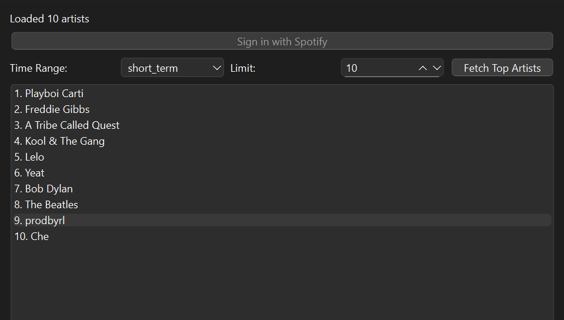

Dupify (Spotify Wrapped Duplicate)
It copies all of the functionality of spotify wrapped, but instead of having to wait a year, you get it instantaniously. After signing in you are taken to your user sign in portal for spotify. After allowing access the program takes all of your user data and returns your most listened to artists in a given period, your most listened to genre (based on a weight algorithm I made) and then using the openai API gives reccomendations.
Python,Spotipy,Openai API,QT Framework
This app taught me a lot about native desktop applications, data analysis, sorting algorithms and reading documentation. This was my first 'big' project that I've completed and also my first desktop application